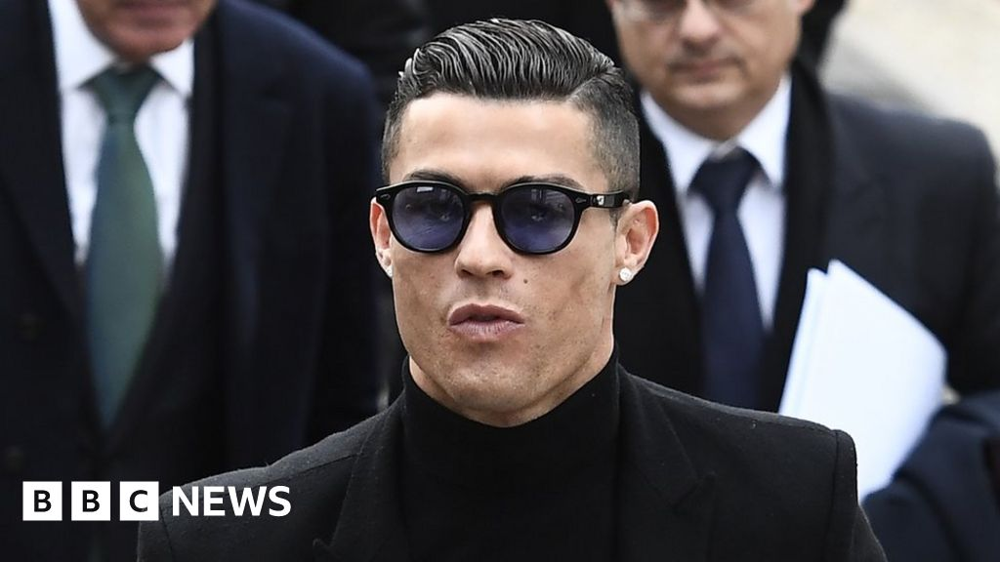

Spanish Tax Fraud Case
Case origin: Spanish tax authorities began investigating Ronaldo as early as the end of 2015. In June 2017, Madrid prosecutors formally filed charges, accusing him of hiding image-rights income between 2011 and 2014 through British Virgin Islands shell companies, evading as much as €14.75 million in taxes.
The tax-evasion method: Ronaldo had set up similar vehicles as far back as his Premier League days. In 2010 he registered a shell company in the British Virgin Islands (BVI) and ran most of his image-rights income through this low-tax offshore vehicle to avoid Spain's high rates. Before 2006 this was legal, but a 2006 Spanish tax reform ruled that foreign residents who lived in Spain beyond a certain period had to pay Spanish tax on such income even if it was held by an overseas company.
Ronaldo's defiant posture: When he appeared in court in July 2017, Ronaldo was unyielding, telling the tribunal: 'Everything I did was legal. I never concealed anything, and I never stopped paying my taxes. My advisors manage all of this, and I trust them 100%.' He even dropped the now-famous line: 'The only reason you're investigating me is because I'm CR7.'
Guilty plea and settlement: Facing up to 15 years in prison, Ronaldo ultimately chose to 'pay his way out'. In June 2018 he reached a settlement with the tax authority, and on 22 January 2019 he personally attended Madrid court for about 15 minutes and pleaded guilty in open court, signing the agreement.
Final verdict: 2 years' imprisonment (suspended), plus a total of nearly €19 million (tax + interest + fines). Under Spanish law, first-time non-violent offenders with sentences under two years typically serve no actual jail time. For comparison: Messi in 2016 was given a 21-month suspended sentence and a €3.7M fine for €4.1M in tax evasion — Ronaldo evaded 3.6 times as much as Messi.
Repeated scrutiny of the shell-company network: This was not the first time Ronaldo's image-rights companies had drawn scrutiny. Media outlets revealed that his tax-avoidance network spanned multiple offshore shells — including Tollin Associates (registered in the BVI), Multisports & Image in Ireland and Talents Films in the UK. This layered 'company-within-company' structure took the tax authorities years to unravel, and was slammed as 'outsourcing tax obligations to accountants as a magic trick'.
Impact: The case is widely seen as a key reason Ronaldo 'fled' Spain for Juventus in 2018 — Italy levies only €100,000 a year on foreigners' overseas income, whereas Spain's top rate hit 52%.